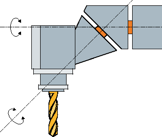
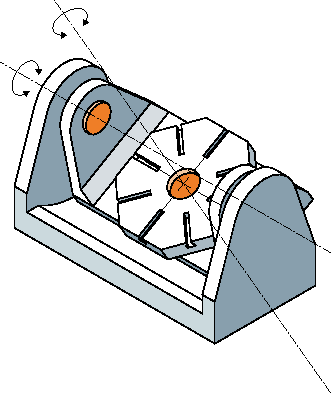
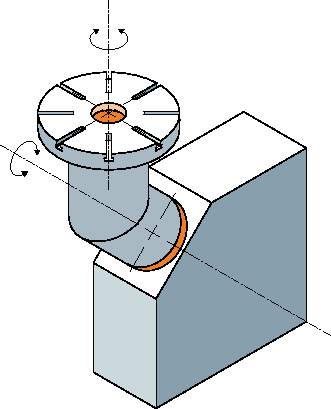
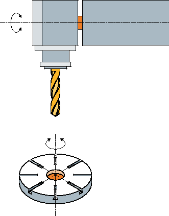
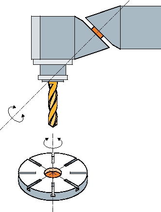

In der Simulation wird das aktuelle Programm vollständig berechnet und das Ergebnis grafisch dargestellt. Ohne die Maschinenachsen zu verfahren, wird so das Ergebnis der Programmierung kontrolliert. Falsch programmierte Bearbeitungsschritte werden frühzeitig erkannt und Fehlbearbeitungen am Werkstück verhindert.
Grafische Darstellung
Die Simulation verwendet zur Darstellung am Bildschirm die richtigen Proportionen des Werkstücks und der Werkzeuge.
Bei der Simulation an Fräsmaschinen steht das Werkstück fest im Raum. Unabhängig von der Maschinenbauart bewegt sich nur das Werkzeug.
Rohteildefinition
Für das Werkstück werden die Rohteilabmessungen verwendet, die im Programmeditor eingegeben werden.
Das Rohteil wird mit Bezug auf das Koordinatensystem eingespannt, das zum Zeitpunkt der Rohteildefinition gültig ist. Vor der Rohteildefinition in G-Code-Programmen müssen also die gewünschten Ausgangsbedingungen hergestellt werden, z.B. durch Anwahl einer geeigneten Nullpunktverschiebung.
Rohteilprogrammierung (Beispiel)
G54 G17 G90CYCLE800(0,"TISCH", 100000,57,0,0,0,0,0,0,0,0,0,-1,100,1)WORKPIECE(,,,"Box",112,0,-50,-80,00,155,100)T="NC-ANBOHRER_D16| Hinweis |
Rohteilverschiebung bei geänderter NullpunktverschiebungDas Rohteil wird immer in der Nullpunktverschiebung angelegt, die gerade aktiv ist. Wählen Sie anschließend eine andere Nullpunktverschiebung, wird das Koordinatensystem umgerechnet, die Darstellung des Rohteils wird allerdings nicht angepasst. |
| Hinweis |
Rohteil-AufspannungWenn Ihre Maschine über verschiedene Aufspannungsmöglichkeiten des Rohteils verfügt, geben Sie die gewünschte Aufspannung im Programmkopf bzw. in der Rohteilmaske angeben. Beachten Sie hierzu auch die Hinweise des Maschinenherstellers. |
Darstellung der Verfahrwege
Die Verfahrwege werden farbig dargestellt. Eilgang rot und Vorschub grün.
Tiefendarstellung
Die Tiefenzustellung wird als Farbabstufung dargestellt. Die Tiefendarstellung zeigt das Tiefenniveau, in dem sich die Bearbeitung momentan befindet. Für die Tiefendarstellung gilt: "je tiefer, desto dunkler".
MKS-Bezüge
Die Simulation ist als Werkstücksimulation ausgelegt, d.h. es wird nicht vorausgesetzt, dass die Nullpunktverschiebung schon exakt angekratzt oder bestimmt sein muss.
Dennoch gibt es in der Programmierung unvermeidbare MKS-Bezüge wie etwa der Werkzeugwechselpunkt im MKS, die Freifahrposition beim Schwenken und die Tischanteile einer Schwenkkinematik. Diese MKS-Bezüge könnten je nach aktueller Nullpunktverschiebung in ungünstigen Fällen dazu führen, dass in der Simulation Kollisionen gezeigt werden, die bei einer realistischen Nullpunktverschiebung nicht auftreten würden, oder umgekehrt Kollisionen nicht dargestellt werden, die bei einer realistischen Nullpunktverschiebung auftreten würden.
Programmierbare Frames
Bei der Simulation werden alle Frames und Nullpunktverschiebungen berücksichtigt.
| Hinweis |
Manuell geschwenkte AchsenBeachten Sie, dass Schwenks in der Simulation und beim Mitzeichnen auch dargestellt werden, wenn die Achsen beim Start manuell geschwenkt sind. |
Simulationsdarstellung
Sie haben die Wahl zwischen folgenden Darstellungsarten:
Abtragssimulation
Bei der Simulation bzw. beim Mitzeichnen verfolgen Sie direkt den Spanabtrag vom definierten Rohteil.
Bahndarstellung
Sie haben die Möglichkeit, zusätzlich eine Bahndarstellung einzublenden. Dabei wird die programmierte Werkzeugbahn dargestellt.
Hinweis Werkzeugdarstellung in der Simulation und bei Mitzeichnen
Damit eine Werkstücksimulation auch mit nicht vermessenen oder unvollständig eingegebenen Werkzeugen möglich ist, werden bestimmte Annahmen zur Werkzeuggeometrie gemacht.
Die Länge eines Fräsers oder Bohrers wird beispielsweise auf einen Wert proportional zum Werkzeugradius gesetzt, damit ein Abtrag simuliert werden kann.
| Hinweis |
Keine Darstellung der GewindegängeBei Gewinde- und Bohrgewindefräsen werden in der Simulation und beim Mitzeichnen die Gewindegänge nicht dargestellt. |
Darstellungsvarianten
Sie können bei der grafischen Darstellung zwischen drei Varianten wählen:
Simulieren vor der Bearbeitung des Werkstücks
Vor der Bearbeitung des Werkstücks an der Maschine können Sie die Abarbeitung des Programms im Schnelldurchlauf grafisch am Bildschirm darstellen.
Mitzeichnen vor der Bearbeitung des Werkstücks
Vor der Bearbeitung des Werkstücks an der Maschine können Sie die Abarbeitung des Programms mit Programmtest und Probelauf-Vorschub grafisch am Bildschirm darstellen. Die Maschinenachsen bewegen sich dabei nicht, wenn Sie "keine Achsbewegungen" angewählt haben.
Mitzeichnen während der Bearbeitung des Werkstücks
Während das Programm an der Maschine abgearbeitet wird, können Sie die Bearbeitung des Werkstücks auch am Bildschirm mitverfolgen.
Ansichten
Bei allen drei Varianten stehen Ihnen folgende Ansichten zur Verfügung:
Draufsicht
3D-Ansicht
Seitenansichten
Drehansicht (Fräs- / Drehmaschine)
Halbschnitt (Fräs- / Drehmaschine)
| Hinweis |
Simulation in Halbschnitt-AnsichtIn der Simulation dient die Ansicht "Halbschnitt" zur genaueren Betrachtung von Innen-Drehbearbeitungen. Diese Ansicht ist nicht zur Betrachtung von Fräsbearbeitungen konzipiert. Die Anzeige von Fräsbearbeitungen kann hierbei zu hohen Simulationszeiten führen. |
Statusanzeige
Die aktuellen Achskoordinaten, der Override, das aktuelle Werkzeug mit Schneide, der aktuelle Programmsatz, der Vorschub und die Bearbeitungszeit werden angezeigt.
In allen Ansichten läuft während der grafischen Abarbeitung eine Uhr mit. Die Bearbeitungszeit wird in Stunden, Minuten und Sekunden angezeigt. Sie entspricht annähernd der Zeit, die das Programm für die Abarbeitung inklusive der Werkzeugwechsel benötigt.
| | Software-Optionen Für die 3D Ansicht benötigen Sie die Option "3D-Simulation des Fertigteils". Für die Funktion "Mitzeichnen" benötigen Sie die Option "Mitzeichnen (Echtzeitsimulation)". |
Ermittlung der Programmlaufzeit
Beim Durchlauf der Simulation wird die Programmlaufzeit ermittelt. Die Programmlaufzeit wird im Editor temporär am Programmende angezeigt.
Modellqualität
Die Abarbeitungsgeschwindigkeit und Gesamtdauer eines Programms in der Simulation hängt teilweise mit der Qualität und der Komplexität des verwendeten Modells zusammen. Durch eine Reduktion der optischen Qualität kann unter Umständen eine geringere Simulationsdauer erreicht werden. Sie können die Modellqualität für die Simulation entsprechend Ihren Anforderungen in der Oberfläche einstellen.
Folgende Tabelle zeigt, welche Modellqualität-Optionen in Abhängigkeit mit der SINUMERIK ONE-Ausprägung verfügbar ist:
SINUMERIK ONE-Ausprägung | Verfügbare Optionen |
|---|---|
SINUMERIK Operate auf NCU 1740 |
|
SINUMERIK Operate auf NCU 1750 |
|
SINUMERIK Operate auf NCU 1760 |
|
SINUMERIK Operate auf IPC |
|
Eigenschaften von Mitzeichnen und Simulation
Verfahrwege
Bei der Simulation werden die angezeigten Verfahrwege in einem Ringpuffer gespeichert. Wenn dieser Puffer voll ist, wird mit jedem neuen Verfahrweg der älteste Verfahrweg gelöscht.
Optimierte Darstellung
Wenn die Simulationsbearbeitung angehalten oder abgeschlossen wurde, wird die Darstellung noch einmal in ein hochauflösendes Bild umgerechnet. In einigen Fällen ist dies nicht möglich. In diesem Fall erhalten Sie die Meldung: "Hochauflösendes Bild kann nicht erzeugt werden".
Arbeitsraumbegrenzung
In der Werkstücksimulation sind keine Arbeitsraumbegrenzungen und Software-Endschalter wirksam.
Startposition bei Simulation und Mitzeichnen
Bei der Simulation wird die Startposition über die Nullpunktverschiebung auf das Werkstückkoordinatensystem umgerechnet.
Das Mitzeichnen startet auf der Position, auf der die Maschine sich gerade befindet.
Einschränkungen
Traori: 5-achsige Bewegungen werden linear interpoliert. Komplexere Bewegungen können nicht dargestellt werden.
Referenzieren: G74 aus einem Programmablauf funktioniert nicht.
Der Alarm 15110 "Satz REORG nicht möglich" wird nicht angezeigt.
Compilezyklen werden nur teilweise unterstützt.
Keine PLC-Unterstützung.
Keine Unterstützung von Achscontainern.
Randbedingungen
Alle vorhandenen Datensätze (Toolcarrier / TRAORI, TRACYL) werden ausgewertet und müssen für eine korrekte Simulation richtig in Betrieb genommen sein.
Die Maschinenkinematik bei TRAFOOF wird nicht beachtet.
Transformationen mit geschwenkter Linearachse (TRAORI 64 - 69) sowie OEM-Transformationen (TRAORI 4096 - 4098) werden nicht unterstützt.
Änderungen an Toolcarrier- oder Transformations-Daten werden erst nach Power On wirksam.
Transformationswechsel und Schwenkdatensatzwechsel werden unterstützt. Nicht unterstützt werden jedoch echte Kinematikwechsel, bei denen ein Schwenkkopf physikalisch ausgewechselt wird.
Die Simulation von Formenbauprogrammen mit sehr kurzen Satzwechselzeiten kann länger dauern als die Bearbeitung, da die Rechenzeitverteilung bei dieser Anwendung zu Gunsten der Bearbeitung und zu Lasten der Simulation ausgelegt ist.
Beispiele
Einige Beispiele für unterstützte Maschinenbauarten:
 | |
Schwenkkopf 90°/90° | |
|  | |
Schwenkkopf 90°/45° |
|  | |
Schwenktisch 90°/90° | |
|  | |
Schwenktisch 90°/45° |
|  | |
Schwenkkombination 90°/90° | |
|  | |
Schwenkkombination 45°/90° |